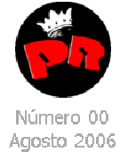

|  | |||||||
La vuelta de Callejeros el 21 de septiembre en el Estadio Chateau Carreras, en la ciudad de Córdoba. Ver Nota Reviví el recital de La Coca Fernandez que tuvo de invitados sorpresa a músicos de Callejeros. En Revista Jamming las mejores imágenes del show. Ver Nota Además el Cordobazo Rock en una puesta de sonido e iluminación poco común para las bandas del circuito local. El Bordo de Buenos Aires colaboró con el festival. Ver Nota Un particular análisis de la visita de Deep Purple a Córdoba, que será este fin de año. Ver Nota Como siempre, todas las notas anteriores que podrías releer y disfrutar de nuevo. |
|||||||
Edición especial de Revista Jamming
Homenaje a Patricio Rey y Sus Redonditos de Ricota, a 5 Años del último show |
|||||||
Proximamente!!!... Nº 01 de Revista Jamming que |
|||||||
Revista Jamming - Córdoba, Argentina - Registro de la Propiedad Intelectual en Trámite
|
|||||||